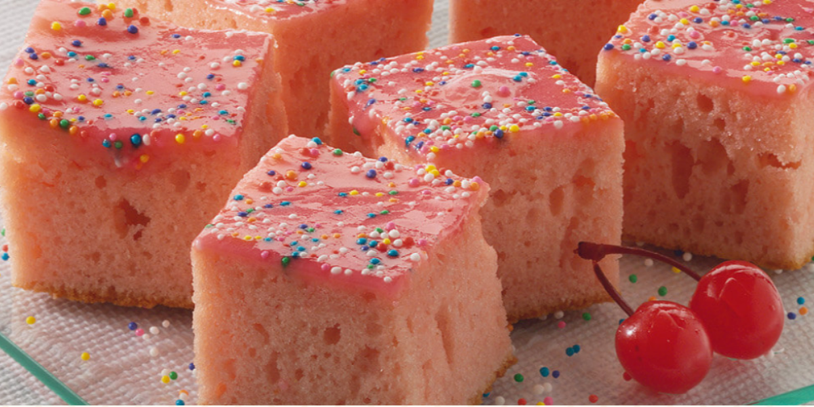

BOLO DE CEREJA:

Rende 24 porções; Tempo de preparo:40min; Dificuldade: Fácil.
INGREDIENTES:
Massa
- 1 Vidro de cereja em calda (150g)
- 1 Leite Moça(Lata ou caixinha)395g
- Meia medida (da lata) de leite líquido ninho
- 3 ovos
- 1 xícara (chá) óleo
- 3 xícaras (chá) de farinha de trigo
- 1 colher (sopa) de fermento em pó
Calda.
- 1 xícara (chá) de açúcar de confeiteiro
MODO DE PREPARO:
Massa.
- Reserve a calda das cerejas.
- Em um liquidificador bata as cerejas com o leite moça,
o leite,ovos e óleo.
- Despeje em um recipiente grande e misture a farinha e o
fermento peneirados aos poucos.
- Em uma fôrma retangular (23x32cm) untada e polvilhada coloque a masssa e leve
ao forno médio (180C), preaquecido, por cerca de 30 minutos
Calda.
- Em um recipiente misture a calda das cerejas com o açúcar de confeiteiro.
- Distribua sobre o bolo desenformado e decore com confeitos coloridos, e saboreie este delicioso bolo.